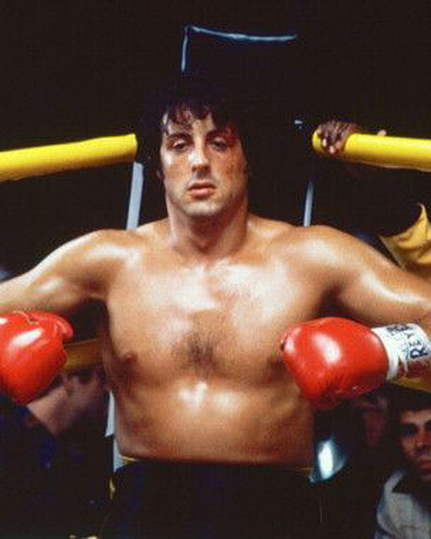

This is us
Sivert
I originally went to high school to become and electrician. But changed my mind later and wanted to pursue higher education.
I have previously coded in C# using dotnet and the Monogame framework.
My hobbies are weightlifting and playing the guitar.
Thobias
In high school I hade mathematics T1, R1 and R2, Biology 1 and 2, chemistry 1 and 2, Physics 1 and TOF 1
I have coding experience in C/C++ and python and within C/C++ i have experience with OpenGL, SFML anf GLFW
Coding and somtimes playing the guitar. I also try to work out sometimes.

My favorites


My favorite sportperson is the fictional boxer Rocky Balboa. The image to the left depicts him during his fight with Apollo Creed in the first Rocky-movie.
The second image is him touching gloves with his opponent Ivan Drago in the fourth Rocky-movie.


I would very much like to travel to Japan. I think it looks like a very pretty country with rich culture and good food. I would love to eat wuague beef which is made in Japan
Questions
| Questons | Answers |
|---|---|
| What does the server in client server architecture do? | The server provides the client with the queried information, images og pages. |
| What does the client do? | Sends requests to the server. |
| What is an IP address? | IP stands for Internet protocol, and is a set of rules and protocols in the transmission of data locally or using the internet. |
| What is DNS? | Domain name system is a registry of names and ip adresses to webpages on the internet. |
| What is the difference between Internet and WWW? | The internet is a global network of interconneted computers,
where as the world wide web is a set of software services running on the internet. |
| Explain what HTML is? | HTML is a markup-language used for documents to be displayed in a web browser |